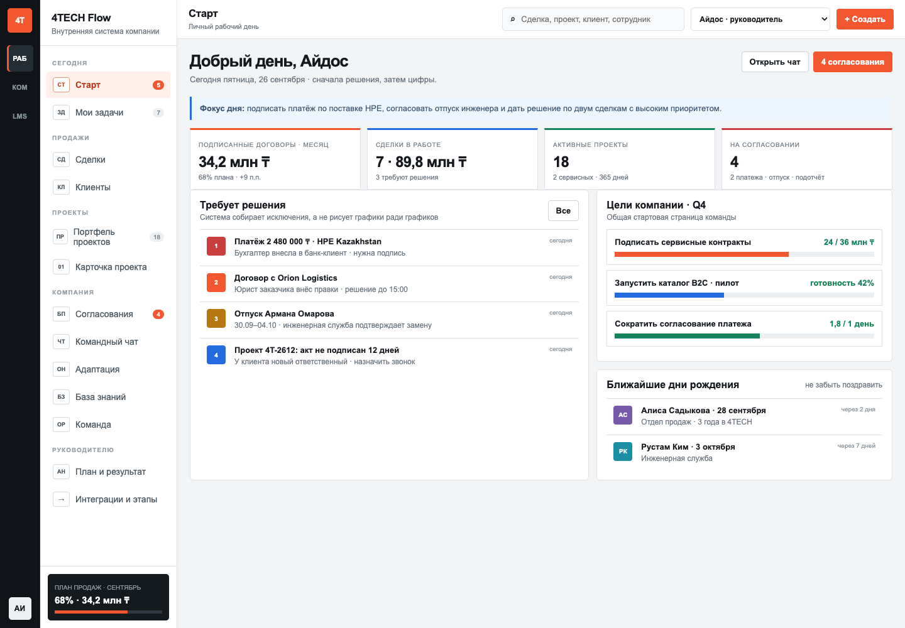
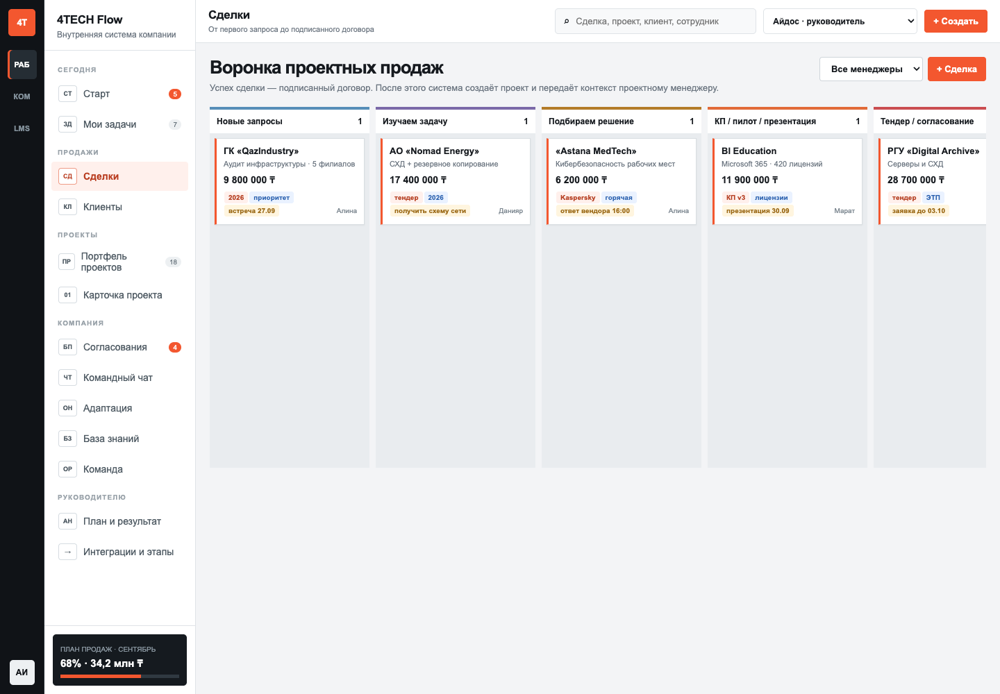
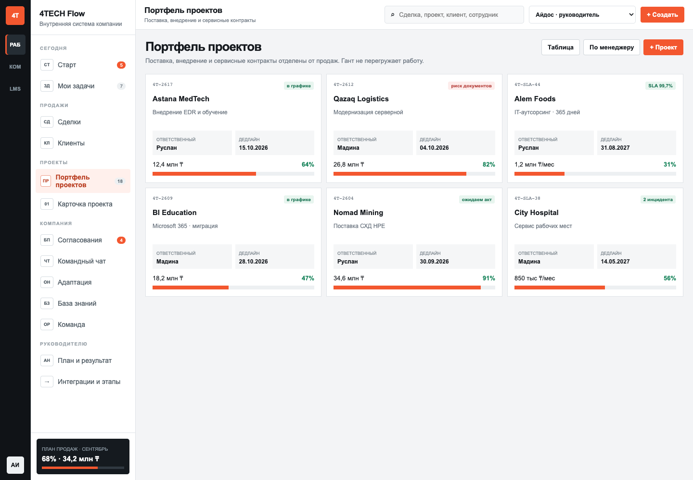

CRM, проекты, внутренние согласования и адаптация сотрудников в едином рабочем контуре — без ежегодной лицензии Pllato.
Продажа может длиться месяцами, требует работы с вендорами и дистрибьюторами, а после договора превращается в поставку, внедрение или годовой сервисный контракт.
Не оплата и не «закрытие лида». Система должна сохранить весь контекст и передать его проектной команде.
Менеджер ведёт клиента до договора, затем проектный менеджер принимает сроки, задачи, документы и команду.
Таблица или канбан, контрольный срок, ответственный, помощник, наблюдатели, задачи, комментарии и документы.
Платёж, отпуск и подотчёт проходят понятные статусы; инициатор видит, у кого сейчас решение.
Курсы, ссылки, регламенты, тесты, чек-листы и контроль допуска — по подразделениям.
Договоры, суммы, сделки по менеджерам, просрочки и решения — на одном экране.
01Новый запросКлиент, задача, источник, приоритет и год реализации.02ПроработкаВстреча, аудит, вендоры, дистрибьюторы, архитектура.03КП / пилотВерсии решения, презентация, документы и договорённости.04ДоговорТендер, согласование, подписанный контракт и сумма.05ПроектКоманда, срок, задачи, документы, результат и SLA.При создании проекта переносятся клиент, предмет, сумма, переписка, файлы, обещания, ответственные и ключевые даты. Повторный ввод не нужен.
единая историяаудит действийРазовый проект: поставка и внедрение на 1–3 месяца.
Сервисный контракт: 365 дней, регулярные обязательства и ежемесячная стоимость.
Директор — решения и показатели; менеджер — сделки и контакты; проектный менеджер — сроки и блокеры; бухгалтер — согласованные платежи; инженер — задачи и материалы обучения.
Фокус дня, личные задачи, просрочки, решения, цели компании, новости и дни рождения.
по ролямСвои этапы, сумма, приоритет, год, вендоры, следующий шаг и причины потерь.
канбанКарточка компании, контакты, до 10+ проектов, сделки, история и ответственные.
фильтрыРазовые и сервисные проекты, срок, прогресс, команда, задачи, статусы и риски.
без ГантаЗакупка/платёж, отпуск и подотчёт с маршрутами, статусами и закрывающими документами.
контроль этаповКомментарии и @упоминания внутри сделки, проекта или процесса, без потери контекста.
внутри карточкиКурсы, чек-листы, документы, ссылки, тесты, прогресс и допуски по отделам.
LMS-lightРегламенты, инструкции, стандарты, поиск, версии и подтверждение ознакомления.
единый источникПодписанные договоры, суммы, активные сделки, проекты, просрочки и менеджеры.
plan / fact
Согласования, риски, цели, договоры и активные проекты.
Решения, план-факт и портфель.
Сроки, блокеры, задачи и команда.
Клиенты, сделки и следующий шаг.


В карточке сделки можно пройти историю, документы и нажать «Договор подписан» — система предложит команду, срок и шаблон исполнения.
Задачи, участники, комментарии, контрольные точки, документы, риски и журнал событий доступны из одной карточки.
Сотрудник → директор → бухгалтер в банк-клиент → подпись директора → чек/фото/получение.
В MVPСотрудник → директор → бухгалтер рассчитывает и выплачивает не позднее чем за 3 дня.
В MVPЗапрос → выдача → расход → чеки и отчёт → возврат остатка → закрытие.
В MVPНовые маршруты с произвольными этапами, полями и условиями.
Этап 2Продажи до подписанного договора.
Исполнение и внутренние процессы.
Обучение, тесты, допуски, регламенты.
Состав фиксируем на обследовании.
Корпоративная почта остаётся отдельно.
В системе — ссылки и рабочие документы.
На встрече не требовались.
Платёж проводится бухгалтером вручную.
Роли, воронка, типы проектов, поля Aspro, маршруты согласований, материалы обучения и критерии приёмки.
Старт, сделки, клиенты, проекты, задачи, роли и перенос приоритетных справочников — чтобы начать переход до 12 ноября.
Платёж, отпуск, подотчёт, комментарии, @упоминания, документы, уведомления.
База знаний, курсы, тесты, план-факт, финальная миграция, обучение и приёмка.
Разработка, настройка, миграция согласованного объёма, тестирование, обучение и запуск. Ежемесячной лицензии Pllato нет.
Договор, обследование и бронирование команды.
После демонстрации и согласования рабочего ядра.
После приёмки полного MVP и передачи в работу.
Продажи, проекты, согласования, командные коммуникации, адаптация и управленческий экран.
Определяем обязательные карточки, поля, историю и документы для переноса в первую очередь.
150 000 ₸ запускают обследование и двухнедельный спринт рабочего ядра.
Ядро → процессы → обучение и аналитика → полный MVP.
Подключается после обследования конфигурации, объектов обмена и доступов. Не входит в стоимость 1 500 000 ₸ и не влияет на старт основного ядра.